M1 em correção — mapa ainda não aprovado. Última crítica: M1-r04, 87,25/100. A nota visual não é porcentagem de conclusão. A versão local M1_v20 contém mudanças posteriores ainda sem aprovação independente.
Mapa isolado do playtest vigente, sem unidades e estruturas de jogadores nas capturas. Nenhum marco final, integração em partida, benchmark ou aceite humano foi inferido.
M1-r05 · M1_v20: nove capturas reais seladas, aguardando crítica independente.
Interior brasileiro natural e denso, luz quente diurna, terra avermelhada, granito e mata ribeirinha. Rio norte–sul, vau ao norte, ponte de pedra central e ponte de madeira ao sul. Distribuição orgânica, com oportunidades equivalentes entre margens e sem espelhamento visual obrigatório.
Originais preservados. Câmeras de referência e provas da engine ficam separadas. A correção do usuário foi natural; não há direção triste ou sombria.
Artes conceituais orientam a reconstrução; capturas reais mostram o estado incompleto da Unity. Clique ou toque nas imagens para ampliar e baixar a prévia local.
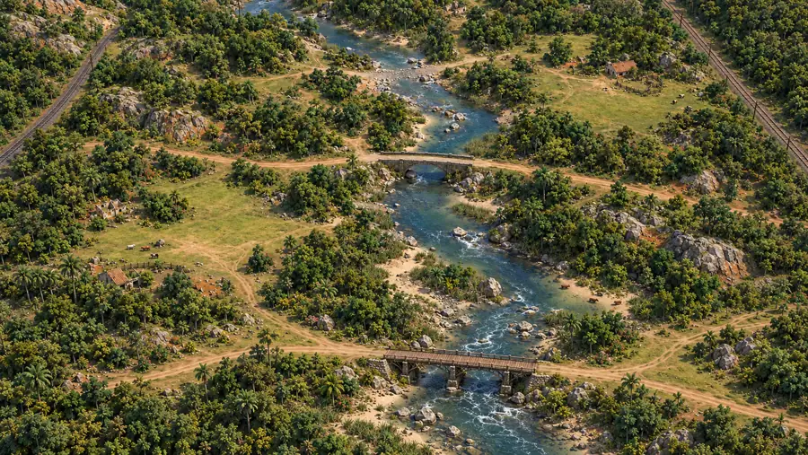
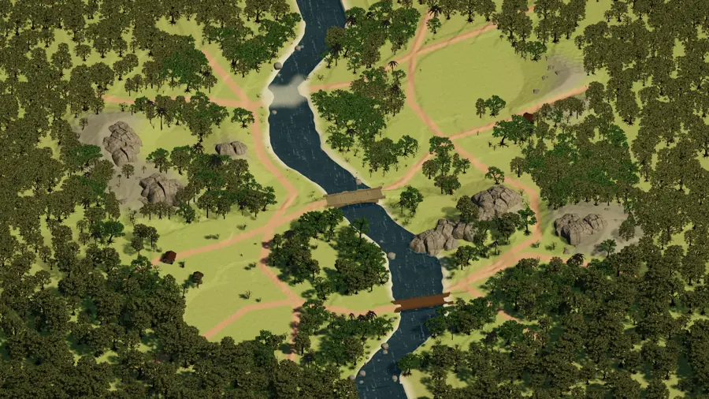
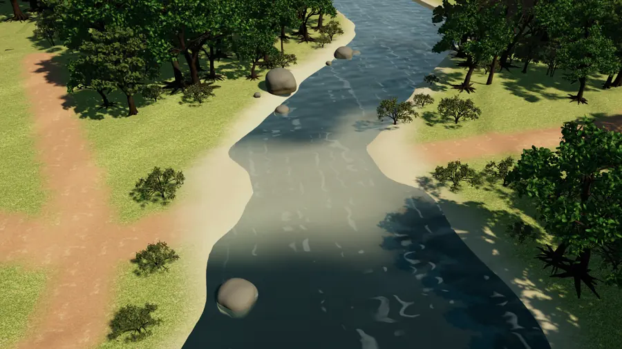
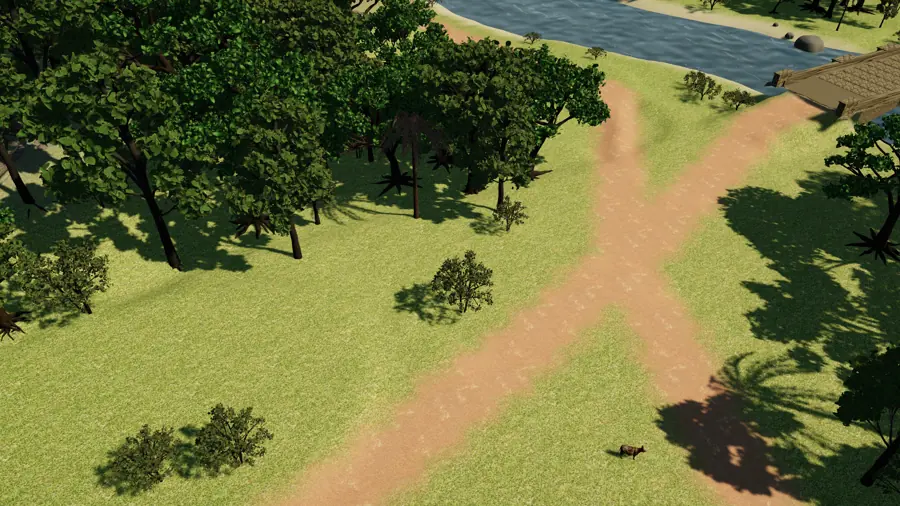
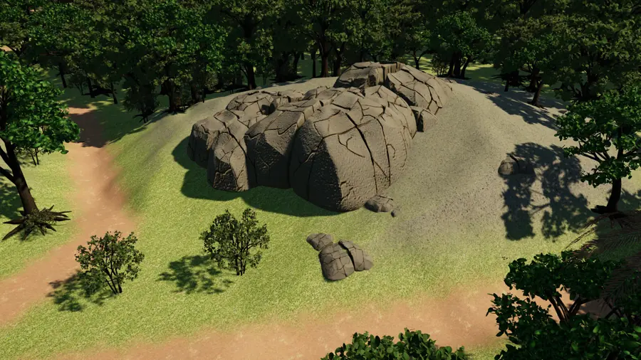
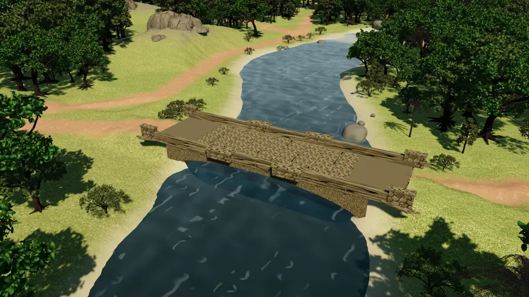
Construir → capturar na Unity → crítico independente → corrigir → repetir. Evidências, configuração e vínculos entre rodadas são selados por hash. O construtor responde aos achados; o crítico reavalia e fecha cada ID com evidência atual.
| Marco | Escopo | Estado |
|---|---|---|
| M1 | Terreno, composição, massas, travessias e acessos preliminares | Em correção |
| M2 | Recursos reais, densidade, estratos, fauna e props | Aguarda aprovação do M1 |
| M3 | Materiais, água, luz, efeitos, partida/HUD e desempenho em build | Aguarda M2 |
Régua: nota ≥90/100, nenhuma dimensão <8/10, nenhum achado blocking/high aberto e gates comprovados. Pesos: composição 30, naturalidade 25, luz 20, modelos 15 e leitura 10. M1/M2 podem adiar desempenho; M3 exige medição real. Aceite estético final é do usuário.
| Rodada | Versão | Nota | Resultado e achados abertos |
|---|---|---|---|
| M1-r01 | 970b43b + autoria M1_v04 local | 58,25/100 | Reprovada ou incompleta · MAP-001, MAP-002, MAP-003, MAP-004, MAP-005, MAP-006 |
| M1-r02 | 970b43b + autoria M1_v07 local; calibracao M1 reaberta para corrigir MAP-001 | 70,50/100 | Reprovada ou incompleta · MAP-002, MAP-003, MAP-004, MAP-007 |
| M1-r03 | M1_v11 | 76,75/100 | Reprovada ou incompleta · MAP-001, MAP-003, MAP-004, MAP-007 |
| M1-r04 | M1_v17 | 87,25/100 | Reprovada ou incompleta · MAP-003, MAP-004 |
| ID | Gravidade / estado | Local | Resultado esperado |
|---|---|---|---|
| MAP-001 | blocking / resolved | QA_Bosque; cameras aceitas v03 com vegetacao atual r03 | Congelar a calibracao v04 e conferir novamente todos os assuntos apos mudar vegetacao/relevo. Nova mudanca deliberada de pose exige reabertura conforme protocolo. |
| MAP-002 | high / resolved | Vau norte z=267 e volumes das tres travessias | Preservar geometria/perfis nos proximos marcos e executar movimento individual/grupos na validacao integrada M3. |
| MAP-003 | high / open | Afloramentos oeste/leste e QA_Minerio; contorno do rio, sobretudo entre pontes e no vau | Aproximar da referencia a extensao/posicao relativa da encosta leste no trecho entre pontes: formar ombros/promontorios rochosos e vegetais que avancem na direcao do rio e se liguem aos corpos mais externos, mantendo corredores e platos nativos. Fazer os caminhos contornarem a massa em vez de separarem sistematicamente rio e afloramento. Conferir tambem a ligacao da encosta oeste. Preservar as bases planas de30m e os oito platos; trabalhar os espacos entre reservas, sem reduzir oportunidades funcionais para copiar a pintura. |
| MAP-004 | high / open | Relacao das massas de bosque, clareiras e caminhos nas duas margens; sobretudo campo oeste e transicao em QA_Bosque | Junto com MAP-003, ajustar os limites das massas fora das bases e platos protegidos: ligar nucleos de bosque aos promontorios e formar bolsos de clareira menos uniformes, conservando corredores livres equivalentes. Manter caminhos legiveis e de largura funcional; evitar resolver apenas com arvores aleatorias ou com estreitamento das reservas. Nova aerea e bosque devem mostrar essa relacao. |
| MAP-005 | high / resolved | Provas preliminares do mapa vinculado, bases, caminhos, reservas e perfis | Atualizar o mesmo conjunto apos mudancas e completar a validacao integrada nos marcos posteriores. Manter recursos/economia/grupos/desempenho fora de qualquer declaracao de aprovacao atual. |
| MAP-006 | medium / resolved | Intencao de luz/cor e materiais provisorios do terreno | Preservar a intencao durante as correcoes e reavaliar PBR/agua/atmosfera em M3. |
| MAP-007 | high / resolved | Correspondencia da faixa util do grid com o tabuleiro real, sobretudo ponte de madeira sul | Manter essas medidas/modelos sincronizados ao grid e repetir apos qualquer alteracao de escala/terreno. Teste integrado de unidades/grupos continua obrigatorio no M3. |
| Prova preliminar atual | Resultado | Limite |
|---|---|---|
| Mapa / fonte | 328×328, célula 1 m, seed 2026, hash 0A7737CE4F57897C | Arquivo vinculado ao SimRunner da cena; autoria sem partida |
| Travessias | z67: mínimo 8 m no grid, z164: mínimo 8 m no grid, z267: mínimo 10 m no grid | Não substitui teste de grupos |
| Modelos das pontes | Ponte de madeira - sul: 8,00 m livres, 27 colunas, Ponte de pedra - central: 8,00 m livres, 26 colunas | Medição geométrica local; integração pendente |
| Reservas das bases | P1: 2821 células de chão em raio 30 m / P2: 2821 células de chão em raio 30 m | Sem economia completa ou aprovação de balanceamento final |
| Testes de terreno/alturas | 26/26 .NET, incluindo 7 regressões de margens; ferramenta QA: 17/17 registrados | Testes técnicos não aprovam qualidade visual |
19 modelos novos + 1 capivara reutilizada, convertidos localmente para FBX/texturas/máscaras URP. 1406 peças principais na autoria atual, além do fundo inacessível. LODs, rig/animação e integração runtime ainda precisam de trabalho.
Produção Tripo registrada: 765 créditos API consumidos de 1000; reserva protegida de 235. Registro de 21/10, não consulta ao saldo ao vivo. Zero novas gerações pagas na construção. O teto anterior de 16500 créditos Artlist não autoriza novas chamadas; esta etapa reutiliza o acervo local.
afloramento granito, arbusto frutos, arbusto ribeirinho, arbusto seco, arvore copa ampla, arvore copa vertical, arvore ribeirinha, capivara reuso, carrinho mao, carroca, casa rural, paiol, palmeira, pedra campo, pedra rio, poco agua, toco, tronco caido, vaca, vagonete
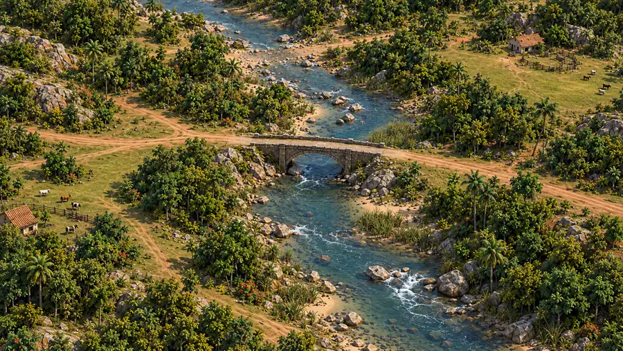
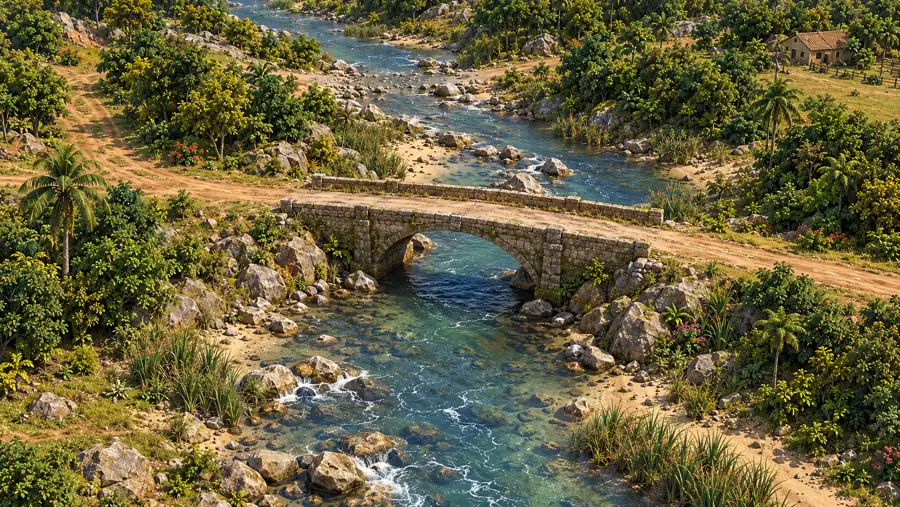
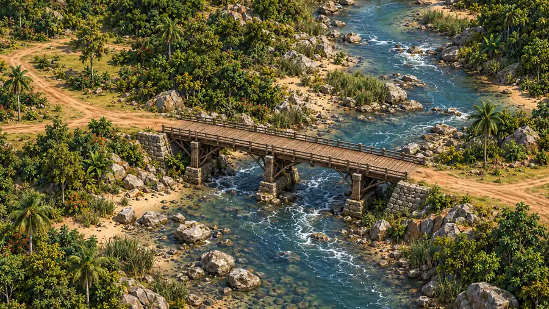
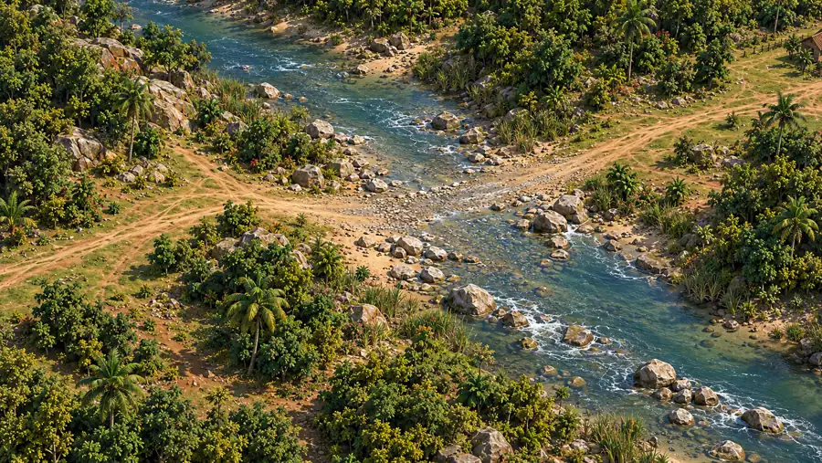
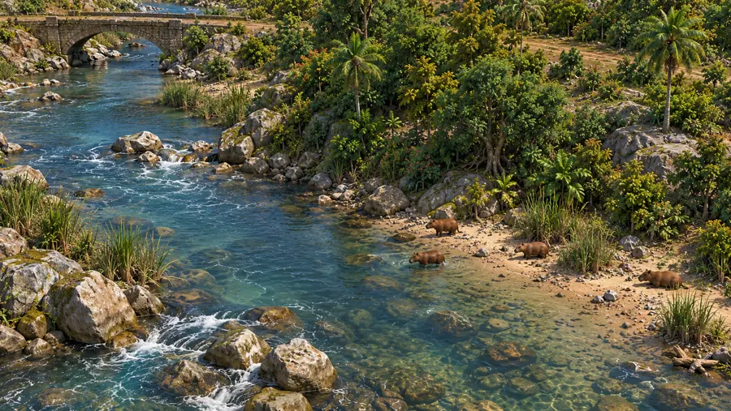
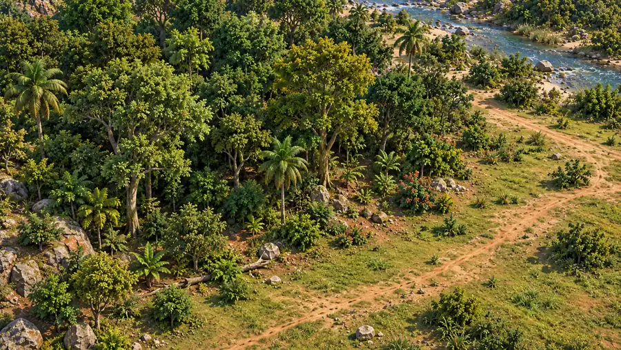
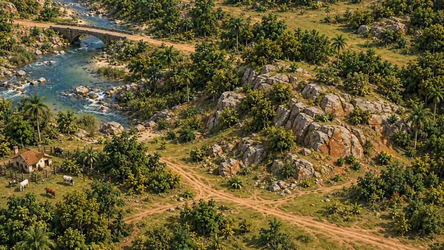
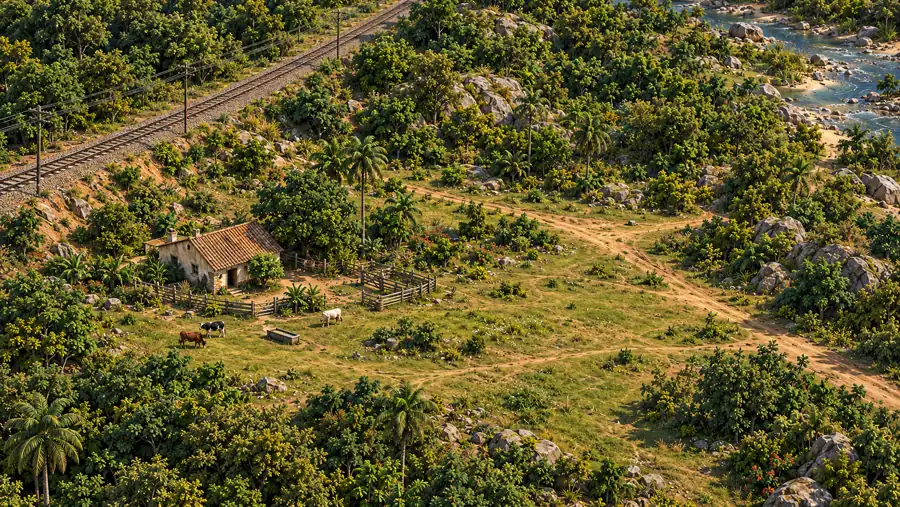
Branch local: codex/mapa-natural-alta-fidelidade. Worktree: E:\ClaudeTemp\ge-mapa-natural. Cena: unity/Assets/Scenes/TravessiaNatural.unity. Sem commit, push, PR ou merge desta construção.
Capturas e revisões completas: E:\Claude Projects\GlobalEmpires\Entregas_Codex\Mapa_Construcao_v01_2026-10-21. Protocolo: E:\Claude Projects\GlobalEmpires\Entregas_Codex\Mapa_QA_v01_2026-10-21. Testes: E:\ClaudeTemp\ge-mapa-natural\unity\Medicoes\MapaNatural\testes\natural-ground-v15.trx. Fontes e recibos originais permanecem fora do card; aqui entram somente prévias leves.
Próxima atualização: após cada rodada, registrar nota, achados, evidências e estado, substituindo as prévias vigentes sem apagar as rodadas seladas.